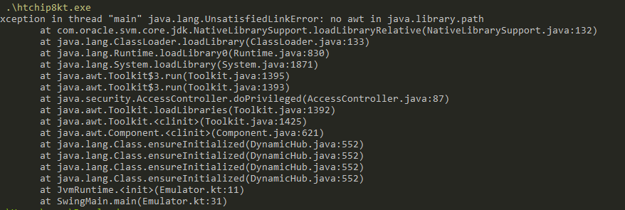

Bitten by GraalVM's fallback option
Another tale about unexpected defaults

I think I was a bit hasty when singing the chanty about the positive experience that building a native executable with GraalVM is a few days ago. In fact a friend of mine tried to execute the CHIP-8 interpreter executable I published as version 0.0.1 and got a ClassNotFoundError for a random Swing class. Uff. I thought I tested it manually. Could it be that ... Yes. turns out that the executable is indeed an executable, but it's not a self-contained one, it needs a JDK for execution, which was given on my machine, but not on my friend's one.
Fallback image
It's something called a fallback image. As described in the linked documentation, a native image is officially seen as an optimization of a Java program. If an application is not optimizable, a fallback image is generated and that needs a runtime to be present on the machine. So I knew about that, but what I wasn't aware of is that the default configuration is that fallback image generation is enabled when I didn't say so. Given that someone who want's to build a native image so that the user doesn't need stuff installed on his computer can't be that interested in building an executable that needs such a runtime, why on earth is a silent fallback to that solution the default? Of course, I am not smarter than others. There is a reason. And it's not a technical one. It's a legal thing. You can read about it here, it was asked last year.
The real problem
So disabling the fallback through the used gradle plugin in build.gradle.kts like
graal {
// ...
option("--no-fallback")
}
led me to this bug filed in April 2020 about some missing symbols. The GraalVM already fixed it a month later, which led me to the question which version of GrallVM I am actually using. Turns out I didn't specify a version and by default the plugin uses 20.2.0, which is over a year old, so it doesn't contain the fix I needed. Using the latest version by configuring
graal {
// ...
graalVersion("21.3.0")
}
then in turn led to an error message that I am also using an outdated Visutal Studio version. Which I then configured to use the 2022 version of the community edition I was convinced I was using already, but I got a bit confused by changes in the versioning scheme of visual studio over time (Program Files vs Program Files (x86), Microsoft Visual Studio/2022 vs Microsoft Visual Studio 15.0).
So now the image finally built successfully, it's now twice as big (30MB), it must be over now, right?
The rabbit hole
Reflection, JNI and resource configurations
Wrong.
Executing it now gives
$ ./htchip8kt.exe
Exception in thread "main" java.lang.NoSuchMethodError: java.awt.Toolkit.getDefaultToolkit()Ljava/awt/Toolkit;
at com.oracle.svm.jni.functions.JNIFunctions$Support.getMethodID(JNIFunctions.java:1114)
at com.oracle.svm.jni.functions.JNIFunctions$Support.getMethodID(JNIFunctions.java:1099)
at com.oracle.svm.jni.functions.JNIFunctions.GetStaticMethodID(JNIFunctions.java:416)
at java.awt.Toolkit.initIDs(Toolkit.java)
at java.awt.Toolkit.<clinit>(Toolkit.java:1427)
at java.awt.Component.<clinit>(Component.java:621)
at java.lang.Class.ensureInitialized(DynamicHub.java:552)
at java.lang.Class.ensureInitialized(DynamicHub.java:552)
at java.lang.Class.ensureInitialized(DynamicHub.java:552)
at java.lang.Class.ensureInitialized(DynamicHub.java:552)
at JvmRuntime.<init>(Emulator.kt:11)
at SwingMain.main(Emulator.kt:31)
which roughly means initializing AWT failed at runtime because a specific method doesn't exist. So this is a similar case like when reflection usage in your program can not be analyzed completely and the compilation process can't know about classes that are used because they are dynamically loaded by a dynamic string identifier. In the given case the java.awt.Toolkit.getDefaultToolkit method is not accessible for JNI and it must be configured. Adding a custom jni configuration to the GraalVM config should now do the job, right? Could be smarter, but can look like this
[
{
"name": "java.awt.Toolkit",
"allDeclaredConstructors": true,
"allPublicConstructors": true,
"allDeclaredMethods": true,
"allPublicMethods": true
}
]
and used with
graal {
// ...
option("-H:JNIConfigurationFiles=${projectDir.resolve("jniconfig.json").absolutePath}")
}
I also realized that changes to the config file should trigger a recompilation, which it currently doesn't do. So writing
tasks.nativeImage { inputs.file(jniConfigFile) }
and utilizing Gradle's task input abstraction solves that (and hopefully doesn't do any harm here).
After the first, there was a second awt class missing. And then there was a field on a AWT class missing. Then a third one. Considering that compilation takes over two minutes on my machine, this workflow was not satisfying. There is an option for the native image tool like --initialize-at-build-time=java.awt but it led to Error: Classes that should be initialized at run time got initialized during image building: [...]. There is also no support for wildcard or package name configuration, there's an open issue for that.
There would have been another option, namely to launch the application the standard Java way with an agent that gathers information about the needed GraalVM config, but it's not (yet) convenient to use it, so I went the ah, the next config will do it, for sure-way. I continued, added a reflection configuration and round about two hours later, the config was still incomplete and I raised doubts that I will ever finish. So I tracked back to the agent approach and added the following snippet to my build.gradle.kts
val buildDirGraalConfigFolder = buildDir.resolve("graalconfig")
val gatherGraalInfo by tasks.registering(Exec::class) {
group = "graal"
dependsOn(tasks.getByName("installDist"))
environment("JAVA_HOME", "C:\\Users\\hanno\\.gradle\\caches\\com.palantir.graal\\$graalDistributionVersion\\11\\graalvm-ce-java11-$graalDistributionVersion")
environment("JAVA_OPTS", "-agentlib:native-image-agent=config-output-dir=$buildDirGraalConfigFolder")
executable(buildDir.resolve("install/jvmswing/bin/jvmswing.bat").absolutePath)
doLast {
listOf(
buildDirGraalConfigFolder.resolve("jni-config.json"),
buildDirGraalConfigFolder.resolve("reflect-config.json"),
buildDirGraalConfigFolder.resolve("resource-config.json"),
).forEach {
it.copyTo(projectDir, overwrite = true)
}
}
}
This is not (yet) portable because I hardcoded the user folder and didn't differentiate between operating systems, just as I didn't with that hardcoded windowsVsVarsPath variable. But it does start the application and creates the config files you need in the proper directory with a single command. The generated config included also a lot of resource definitions that I didn't think of before. So all in all I ended up with 250 lines of resources config, over 200 lines of reflection config and 800 lines of jni config.
Thanks that I stopped trying to figure that out manually after an hour.
I stumbled over a comment on GitHub from someone who seemed to have made a similar experience like I had, citing:
If I'm required to trace all possible Swing GUI events before being about to properly compile, that's not very practical, even for a toy program.
So I can finally go to sleep, yes?
Missing system properties in the native image
No.
Starting the executable (which is now 40MB) leads to the following error:
Exception in thread "main" java.lang.reflect.InvocationTargetException [...] Caused by: java.lang.Error: java.home property not set
Are you kidding me?
The stacktrace I don't show for brevity contains some look-and-feel stuff. When I remove the dark look-and-feel I use, the application can be bundled into a native image which also works now. So the laf must be problematic. It also happens when setting a standard look-and-feel. It happens in sun.awt.FontConfiguration.findFontConfigFile(FontConfiguration.java:182). Here I can see that it's optional that a fontConfigFile is present, but the method fails when no java.home property is set, that's for sure. Just, well, we don't have a Java Home. I don't fully understand the necessity of making the java installation a requirement here, since I also found out that not all JDK distributions contain such a configuration at all. I write the following thing before initialiazing the laf because there's no other option left:
System.setProperty("java.home", "dummyoverride")
Missing font configuration file
But then it seems I need to provide sun.awt.fontconfig as well, or it will search within the dummyoverride Java Home that doesn't exist. Setting an existing config from my system lets me now generate a working executable, so I am going to embed a simple config as a resource. It's possible to get a File instance from a resource as well, but it doesn't work to pass that path into FontConfiguration, I tried it. So the last bit is that I am going to write that font config file to where the exe is launched from. Very ugly, but I don't know a better way that doesn't require the user to pass in any configuration.
val fontConfig: String? = System.getProperty("sun.awt.fontconfig")
if(fontConfig != null) {
println("Using font config $fontConfig")
} else {
val fontConfigFile = File("./fontconfig.properties")
println("Saving and using default font config ${fontConfigFile.absolutePath} .\n" +
"When you don't like that, pass in system property 'sun.awt.fontconfig' pointing to your font config.")
fontConfigFile.writeText(javaClass.classLoader.getResource("fontconfig.properties").readText())
System.setProperty("sun.awt.fontconfig", fontConfigFile.absolutePath)
}
UIManager.setLookAndFeel(UIManager.getSystemLookAndFeelClassName())
Missing libraries
It kind of works. But testing the executable now gives another interesting error:

So parts of the application are missing, which means it's still not everything linked statically. There's also this issue mentioning unsolveable (?) problems with static linking AWT and Swing stuff into applications. Taking a look at graal's build output folder confirms everything, there is an info file and a bunch of dlls like java.dll, awt.dll, jawt.dll and more. They need to be part of the distribution, so I changed my distribution to a zip file containing all the stuff, which is fairly easy with Gradle:
distributions {
create("htchip8kt") {
distributionBaseName.set("htchip8kt")
contents {
from(buildDir.resolve("graal"))
}
}
}
The exe is now much bigger then before (32MB) and there are a few 100KBs additional dll files. The 0.0.2 release can now be found here.
Conclusions
So in my case the only thing that could have prevented me from shipping a broken release would have been testing the executable on a machine that has nothing installed - at least no Java. Or with a completely clean environment. This is maybe easier for an application that doesn't need a UI because it can be done inside a docker container or on a CI system.
My euphoria when I first bundled an executable that I was able to launch distracted me from the fact, that targeting native image distribution should simply be seen as an additional deployment target, besides the JVM one. It's a lot of manual configuration effort, it's testing effort, it's time consuming and unpleasent work. It's far, far behind the developer experience and convenience a JVM developer is used to and I don't know whether there's really such a big difference between Kotlin/Native and native image with GraalVM in this regard. Of course, one can expect things to be simpler without using heavyweights like AWT or when using frameworks with first class native image support, like Quarkus, soon Spring and the likes. What honestly surprised me most is that some parts of the JDK seem to simply be fundamentally incompatible with AOT (or the way Graal works). And I am not even talking about super complex technical reasons, I am talking about things like some AWT classes requiring a Java Home property to be present, hard failing when it's not.
When the requirement is to ship a self contained applicaiton, but not needlessly a single binary, a very small distribution or a super fast starting application, bundling a JVM, some jar files and executables into a zip might be a safer bet right now. In the future, I will treat native image creation and distribution with a lot more care.